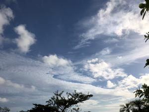
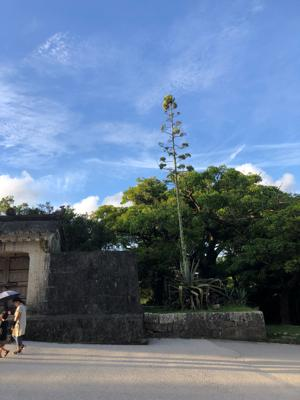
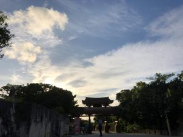

うるがいの話 ある日
最新: 老眼(老視)【うるがいの話 ある日】とは 一日だけのプログです
『うるがいの話』の最新一日だけのプログで、通信料が少なく経済的だ。カニの画像をクリックすると全ての日付が載る『うるがいの話』サイトを表示します
|
|
【うるがいの話】 うるがい(ｳﾙｶﾞｲ urugai)とは、『もずくがに』の名前でとても大きくなります。 |
|---|---|
|
|
【カミマヤーの話】 猫のことを方言でマヤーといいます。カミマヤー（kamimayaa）とは、神の猫のことです。 |
|
【たながぁの音楽】 たながぁ（ﾀﾅｶﾞｰ tanagaa）とは手長えびのことで、何種類かあり大きいのは車 エビぐらいになります。 |

|
【ぶながぁの話】 ぶながぁ(ﾌﾞﾅｶﾞｰ bunagaa)とは、赤い髪の毛、赤い身体、そして身長は１ｍ２０ｃｍ ぐらい、川の蟹を食べているの目撃された。場所は沖縄県国頭郡大宜味村のと ある村僕の隣近所に住んでいる爺さんから、聞いた話です。 |
|
|
【ギーマの話】 ギーマ(giima)とは、山原の里山に咲くスズランに似た、 花を付けます。実は食べられます、 気が付くと口の周りが紫になっています。 |
2022年08月21日 (日）老眼(老視)
16:14
  
近くのものにピントが合わない、老眼は、加齢を原因として水晶体が弾力を失
い、近方にピントが合いづらくなることを指します。ヨメはまさしくこの状況
である。だから、本を読まずテレビをみて過ごしている。私は逆で、針の孔に
糸を通したり、薬瓶の小さな文字もハッキリくっきり見える。字が小さい単行
本も全然苦にならない、だから単行本をひたすら読む。ただし、パソコンを始
終みているのでドライアイになっている。朝目を開ける時、両目が痛い！ので
ある。ただ、数か月前から目薬を入れる代わりに、水で洗顔るとき目のもあわ
せて洗うようにすると、起きている間は目薬をささなくても済むようになった
。ただ、朝の目の痛みは相変わらずなので、眠るときに目薬をさすことにした
効果てき面、完全ではないが痛みはかなり引いた。
１６時１０分 ビットコインの総資産 ￥８、３７３↓